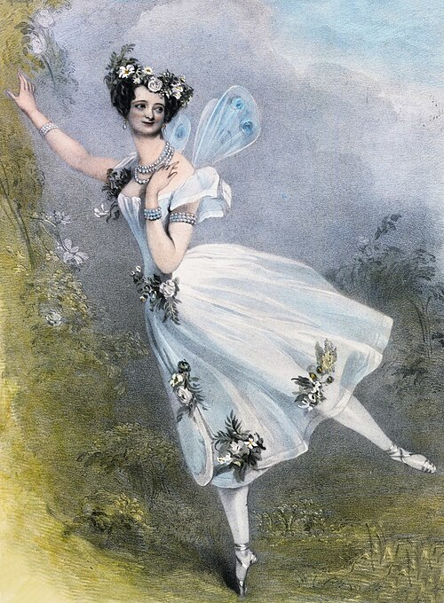
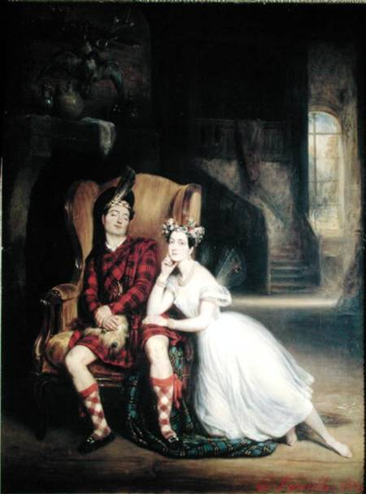
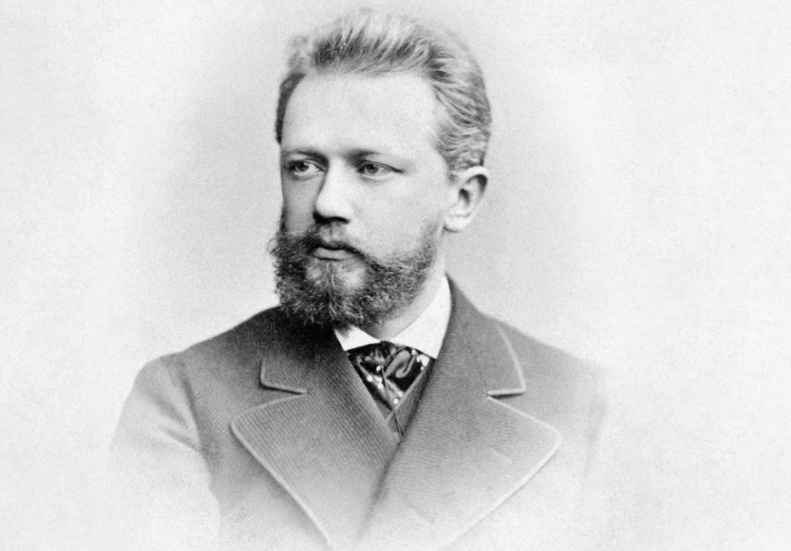
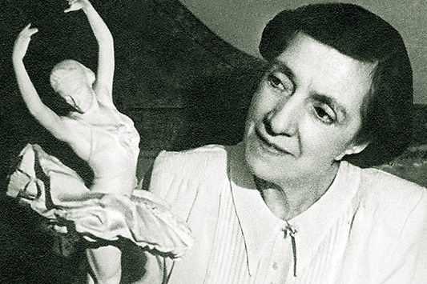
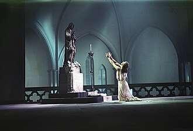

Tokom prve polovine 19. vijeka, ruski balet je prolazio kroz fazu učenja i asimilacije zapadnoevropskih trendova. Car Nikolaj I i carska porodica izdašno su finansirali teatarske škole u Sankt Peterburgu i Moskvi, pretvarajući ih u državne institucije visokog ranga. Francuski majstori poput Šarla Didloa i Žila Peroa donijeli su u Rusiju duh evropskog romantizma, naglašavajući eteričnost, dramatični izraz i tehniku rada na vrhovima prstiju (špic-patike). Priča o nastanku špic-patika počinje krajem 18. vijeka, kada su balerine nosile cipele sa potpeticama, koje su im otežavale skokove i okrete. Prelomni trenutak dogodio se 1795. godine, kada je koreograf Šarl Didlo izumio „leteću mašinu“ — sistem žica i užadi koji je plesače podizao u vazduh prije nego što bi se odvojili od tla. Ovaj izum je stvorio iluziju bestežinskog stanja i probudio želju kod koreografa i publike da plesačice zaista lebde na vrhovima prstiju, bez mehaničke pomoći. Prva balerina koja je to izvela bez žica bila je slavna Italijanka Marija Taljoni. Godine 1832. u Parizu, u baletu Silfida, ona je plesala en pointe (na vrhovima prstiju) u običnim satenskim papučama koje je sama ojačala prošivanjem i utapkavanjem pamuka na vrhovima. Njen nastup izazvao je senzaciju i zauvijek promijenio estetiku baleta, jer je igra na vrhovima prstiju postala simbol eteričnosti, gracioznosti i natprirodnih bića poput vila i silfida. Međutim, Taljonijeve patike bile su veoma mekane i pružale su minimalnu podršku, pa su plesačice morale da se oslanjaju isključivo na sopstvenu snagu stopala i gležnjeva. Prave, strukturalno ojačane špic-patike kakve danas poznajemo nastale su krajem 19. vijeka u Italiji. Italijanski obućari su počeli da izrađuju cipele sa čvrstom kutijom (kapicom) na vrhu, napravljenom od slojeva tkanine, kartona i specijalnog ljepka, kao i sa ojačanim đonom. Ovaj izum omogućio je balerinama da ne samo nakratko stanu na prste, već da izvode složene piruete, skokove i duge balanse, čime je rođena moderna baletska virtuoznost.



Ruski plesači su brzo usvojili ove vještine, ali su im udahnuli specifičnu slovensku ekspresivnost i glumačku dubinu, stvarajući jedinstvenu sintezu koja će ubrzo nadrasti svoje uzore. Prekretnica koja je ovu sintezu pretvorila u svjetsku dominaciju nastupa u drugoj polovini 19. vijeka, dolaskom francuskog koreografa Marijusa Petipe na čelo Carskog baleta u Sankt Peterburgu. Dok je u Zapadnoj Evropi interesovanje za balet polako opadalo, Rusija je postala njegovo glavno utočište i centar razvoja. Petipa je usavršio formu velikog klasičnog baleta (tzv. grand ballet), spajajući francusku eleganciju, italijansku virtuoznost i rusku duševnost. Njegova istorijska saradnja sa kompozitorom Petrom Iljičem Čajkovskim iznjedrila je remek-djela koja i danas čine temelj svjetskog repertoara: Labudovo jezero, Uspavanu ljepoticu i Krcka Oraščića. Ovim djelima muzika u baletu prestaje da bude puka ritmička pratnja plesu i postaje ravnopravan dramski nosilac radnje.Druga polovina 19. vijeka rezervisana je za apsolutnu dominaciju francuskog koreografa Marijusa Petipaa, koji je u teatru Marijinski postavio temelje onoga što danas nazivamo vrhuncem klasičnog baleta. Petipa je stvorio strogu strukturu velikih baletskih predstava, uvodeći raskošne scenografije, simetrične formacije ansambla i virtuozni oblik plesa poznat kao grand pas de deux. Ključni istorijski momenat bila je njegova saradnja sa kompozitorom Petrom Iljičem Čajkovskim. Kroz remek-djela Uspavana ljepotica, Labudovo jezero i Krcko Oraščić, baletska muzika je po prvi put prestala da bude obična ritmička pratnja plesačima i postala duboko simfonijsko i dramsko djelo.
Na prelazu u 20. vijek, ruski balet je proživio estetsku revoluciju zahvaljujući vizionaru Sergeju Djagiljevu i njegovoj privatnoj trupi Ballets Russes (Ruski baleti). Djagiljev je odbacio akademske šablone 19. vijeka i na scenu u Parizu donio koncept "totalne umjetnosti", spajajući avangardne koreografe, kompozitore i slikare. Koreograf Mihail Fokin je skratio formu baleta na jednočinke i oslobodio pokret tijela, dok je kompozitor Igor Stravinski unio revolucionarni ritam i modernizam kroz predstave Žar-ptica, Petruška i Posvećenje proljeća. Ova trupa je trajno emancipovala muški ples i radikalno transformisala modernu zapadnu umjetnost. Ovu umjetničku eksploziju na sceni pratili su i vizuelni geniji poput Leona Baksta i Aleksandra Benoa, čiji su živopisni kostimi i scenografije pokrenuli pravu modnu i dizajnersku revoluciju širom Evrope. Istovremeno, izvođački vrhunac trupe oličavali su harizmatični Vaclav Nižinski, koji je pomjerao granice fizičke izdržljivosti i avangardne koreografije, te krhka, ali tehnički savršena Ana Pavlova, koja je svojim turnejama popularizovala balet na svim kontinentima. Dok je Ballets Russes mijenjao zapadnu kulturu u egzilu, Oktobarska revolucija 1917. godine u samoj Rusiji donijela je potpuno novi zaokret. Umjetnost je stavljena u službu nove ideologije, pa se tokom sovjetske ere razvio takozvani „dramski balet“ (drambalet), koji je težio realizmu, snažnoj naraciji i istorijskim temama. Uprkos ideološkim pritiscima, tradicionalni Carski teatri (preimenovani u Kirov u Lenjingradu i Boljšoj u Moskvi) uspjeli su da sačuvaju klasično nasljeđe, a pedagoški sistem Agripine Vaganove postao je svjetski standard za tehničku perfekciju.

Nakon Oktobarske revolucije 1917. godine, sovjetska vlast je prvobitno sumnjičavo gledala na balet kao na buržujski luksuz, ali je ubrzo prepoznala njegov potencijal za državnu propagandu. Ključnu ulogu u očuvanju tradicije odigrala je balerina i pedagog Agripina Vaganova, koja je naučno sistematizovala rusku baletsku tehniku, stvorivši svjetski poznatu "metodu Vaganove". Stil sovjetskog baleta se prilagodio doktrini socijalističkog realizma, stavljajući naglasak na herojstvo, atletizam i grandioznost. Iz tog perioda rođena su epska djela poput Romea i Julije Sergeja Prokofjeva i monumentalnog Spartaka Arama Hačaturjana.

Sredinom i u drugoj polovini 20. vijeka, tokom Hladnog rata, sovjetski balet je postao glavno oružje kulturne diplomatije. Turneje teatara Bolšoj i Kirov (Marijinski)šokirale su zapadnu publiku tehničkim savršenstvom i harizmom zvijezda poput Maje Plisecke. Međutim, stroga državna kontrola i umjetnička izolacija unutar SSSR-a natjerale su neke od najvećih plesača vijeka na drastične korake. Spektakularni prebjezi zvijezda kao što su Rudolf Nurejev, Natalija Makarova i Mihail Barišnjikov na Zapad ne samo da su uzdrmali političku scenu, već su direktno udahnuli novi život zapadnoevropskim i američkim baletskim trupama.